{kind=link}
late = 늦은
뜻은 알지만 어떤 동사와 말투로 친구에게 알려야 할지는 남지 않을 수 있습니다.
처음부터 차근차근 · 화면 사용법
이 가이드는 I’m running a little late. 한 문장으로 카드 저장, 첫 복습, 영작을 끝내는 길을 먼저 보여 줍니다. AI 연결, 듣기 카드, 캐릭터챗과 PlayZone은 그다음에 필요한 만큼만 따라 하세요.
조금 늦을 것 같아요.
01 · 설치와 첫 실행
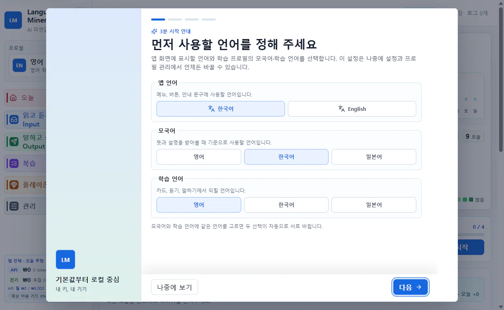
02 · 문장으로 기억하기
뜻은 알지만 어떤 동사와 말투로 친구에게 알려야 할지는 남지 않을 수 있습니다.
run late라는 표현, 진행 중인 상황과 자연스러운 말투를 함께 기억합니다.
읽기와 듣기는 자연스러운 영어를 알아보는 힘을 만들고, 말하기와 영작은 뜻과 상황에서 영어를 직접 꺼내는 힘을 만듭니다. 같은 문장을 양쪽에서 연습하면 “본 적 있는 표현”이 “내가 쓸 수 있는 표현”으로 이어집니다.
03 · 첫 학습 루프
왼쪽 메뉴에서 아래 네 곳만 기억하면 첫 학습 루프를 끝낼 수 있습니다.
읽고 듣기 · Input → 웹 리더 → 복습 → 말하고 쓰기 · Output → 영작 훈련
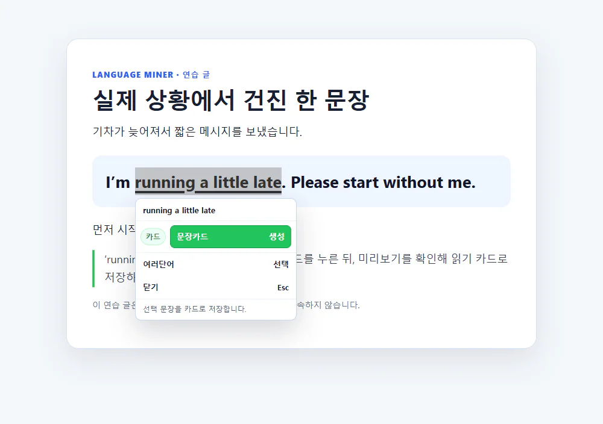
미리보기에서 원문, 자연스러운 뜻, 선택 표현과 가까운 문맥을 확인합니다. 자동으로 채워진 내용도 직접 고칠 수 있습니다. 사람 이름, 연락처, 업무 내용처럼 남기고 싶지 않은 정보는 지운 뒤 카드 담기를 누르세요.
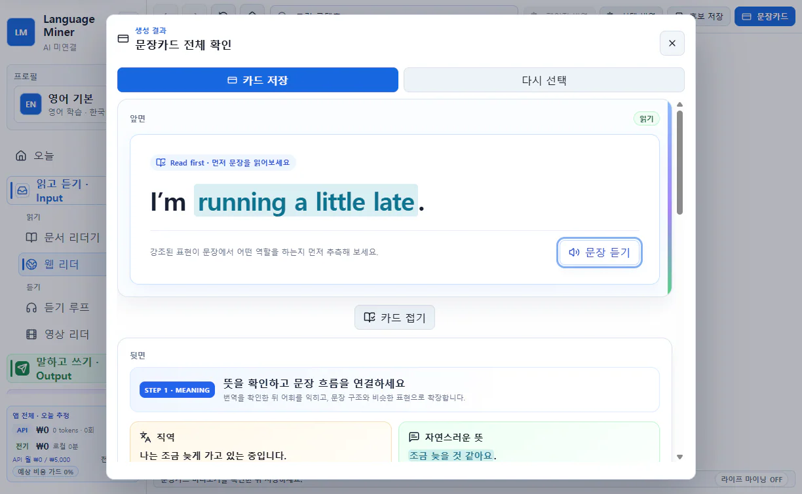
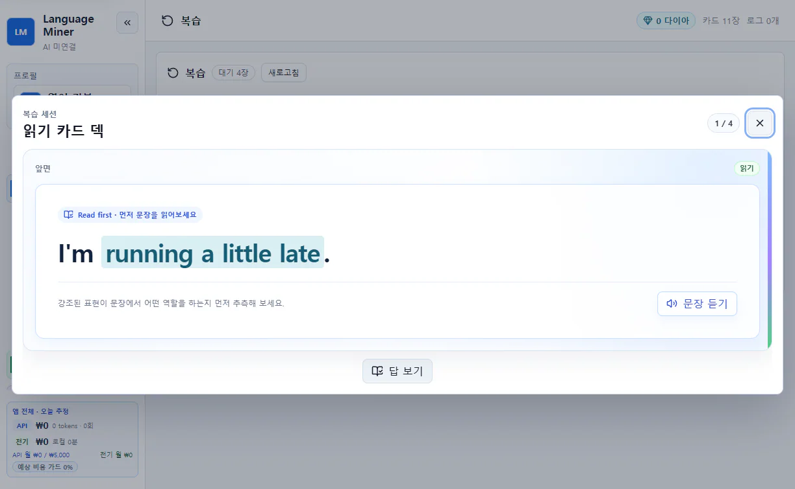
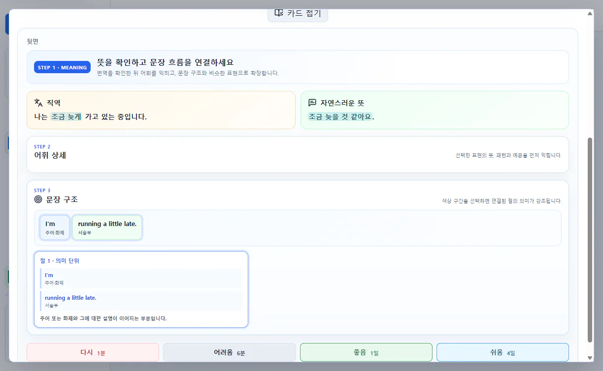
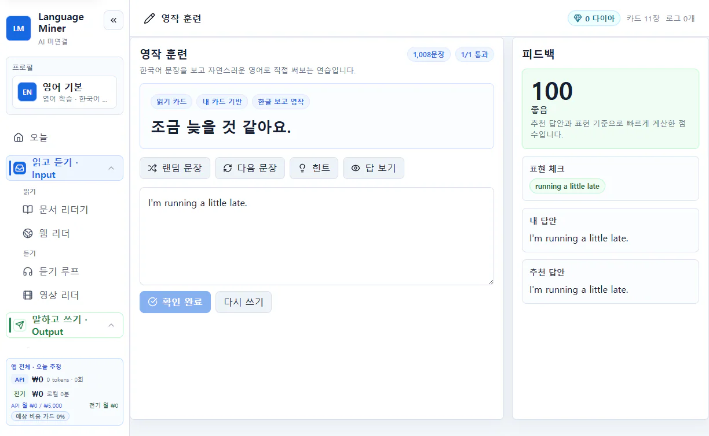
캐릭터챗은 AI 연결이 필요한 선택 기능입니다. 말하고 쓰기 · Output → 캐릭터챗에서 캐릭터와 학습 언어로 실전 연습을 고른 뒤 같은 문장을 보내 보세요. 클라우드 AI라면 시작 전에 캐릭터 설정, 최근 대화, 내 메시지와 카드 힌트가 외부로 전송될 수 있다는 안내를 확인합니다.
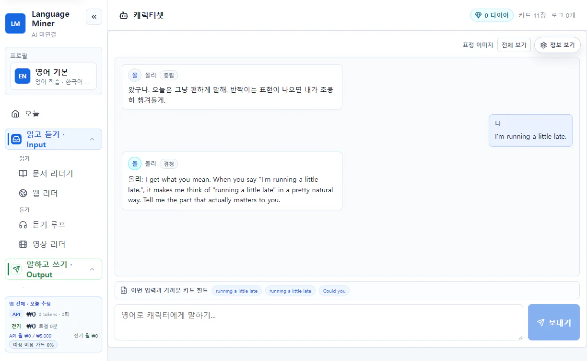
04 · 카드 세 종류
| 카드 | 만드는 곳 | 앞면에서 하는 일 |
|---|---|---|
| 읽기 카드 | 웹 리더, 문서 리더기 | 영어를 보고 뜻과 구조 떠올리기 |
| 듣기 카드 | 듣기 루프, 영상 리더 | 원본 소리나 구간을 듣고 문장 알아보기 |
| 말하기 카드 | 라이프 마이닝 | 모국어 상황에서 학습 언어로 표현 꺼내기 |
세 종류를 한 화면에서 동시에 만드는 구조가 아닙니다. 글로 보면 아는데 소리에서 놓쳤다면 듣기 카드, 평소 자주 하는 말을 영어로 바로 꺼내고 싶다면 말하기 카드를 추가하세요.
05 · 내 자료로 확장
PDF나 지원 문서를 열고 표현을 선택해 읽기 카드로 만듭니다. 북마크와 최근 문서에서 다시 이어 봅니다.
자막 구간을 반복하고 잘 안 들리는 소리 덩어리를 표시해 듣기 카드로 저장합니다.
자막 또는 전사 구간과 반복 범위를 확인한 뒤 현재 구간을 듣기 카드로 저장합니다.
실제로 말하고 싶었던 모국어 표현을 말하기 카드 후보로 모읍니다. 자동 수집은 기본적으로 꺼져 있습니다.
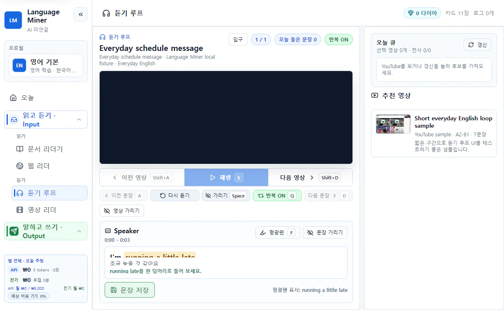
06 · PlayZone
캐릭터챗이 표현을 대화에서 시험하는 곳이라면, PlayZone은 학습으로 얻은 로컬 보상과 표현을 게임에 연결하는 곳입니다. 공식 게임도 앱 용량을 줄이기 위해 처음 사용할 때 내려받을 수 있습니다.


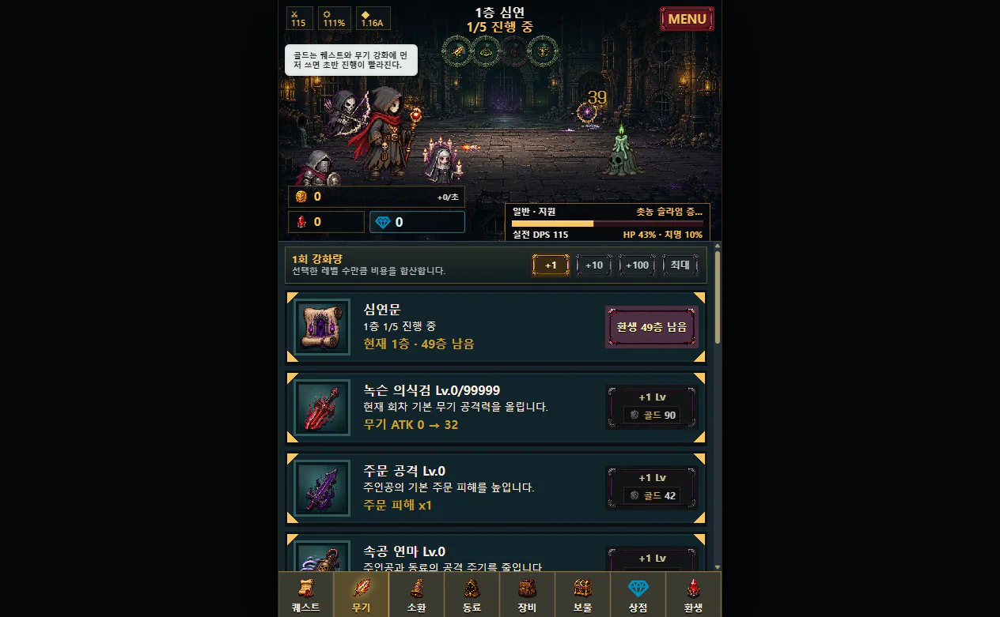
07 · AI 연결
관리 → 설정 → AI · 음성 → 카드 생성
새 설치의 기본 상태입니다. 카드 관리와 복습 등 AI가 필요 없는 기능부터 사용할 수 있습니다.
별도로 설치한 로컬 모델을 사용합니다. localhost, 127.0.0.1, ::1 같은 loopback 주소만 로컬로 표시됩니다.
본인의 키를 사용하는 BYOK 방식입니다. 공급자, 모델, 전송 내용, 예상 호출과 비용을 확인한 뒤 실행합니다.
프롬프트를 직접 복사하고 결과 JSON을 붙여넣는 수동 방식입니다. 앱은 로그인 쿠키나 ChatGPT 페이지를 읽지 않습니다.
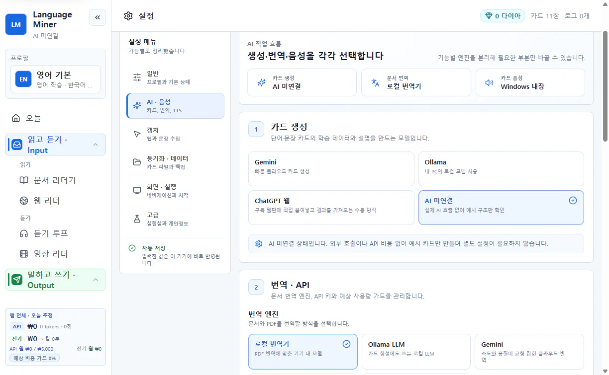
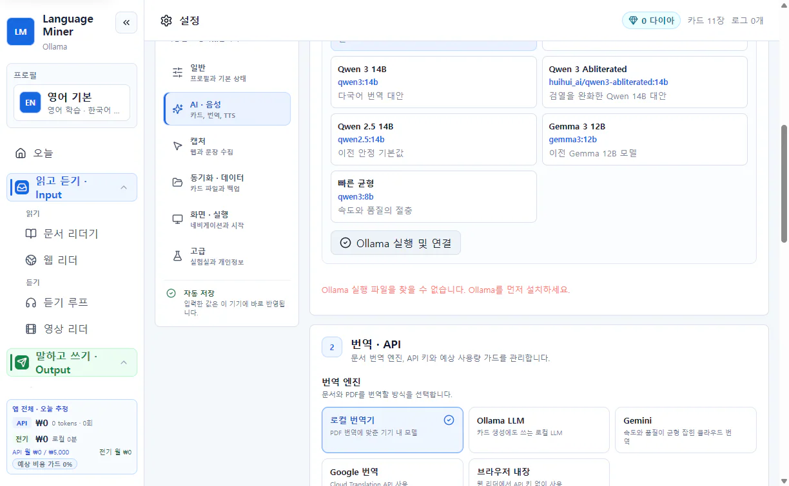
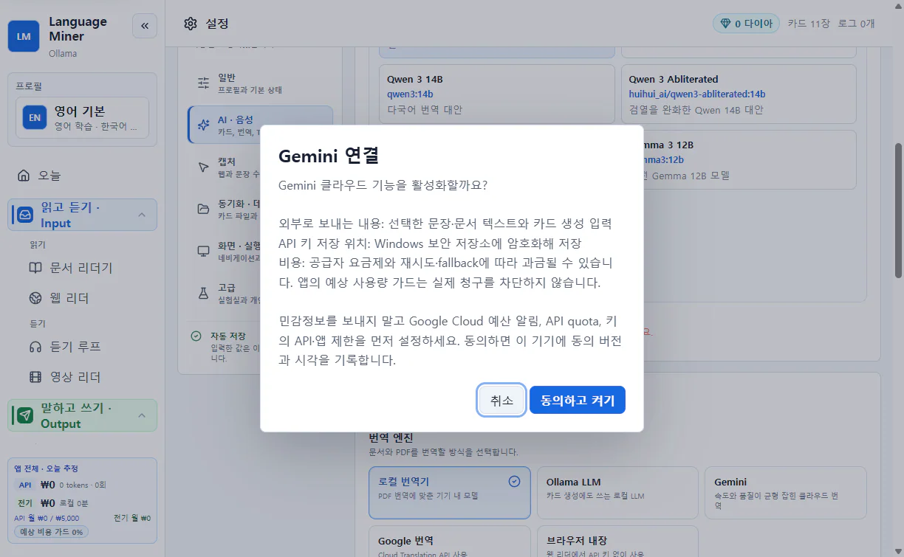
08 · 백업과 데이터 삭제
관리 → 설정 → 동기화 · 데이터 → 전체 백업·복원
백업 파일 만들기로 .lembackup 파일을 저장합니다. 복원할 때는 체크섬과 버전, 충돌을 확인한 뒤 새 프로필로 복원, 겹치지 않는 데이터 합치기, 현재 데이터 교체 중 결과를 미리 보고 고릅니다.
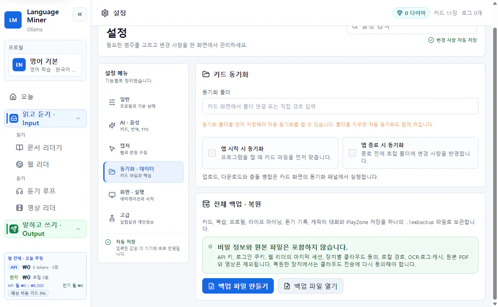
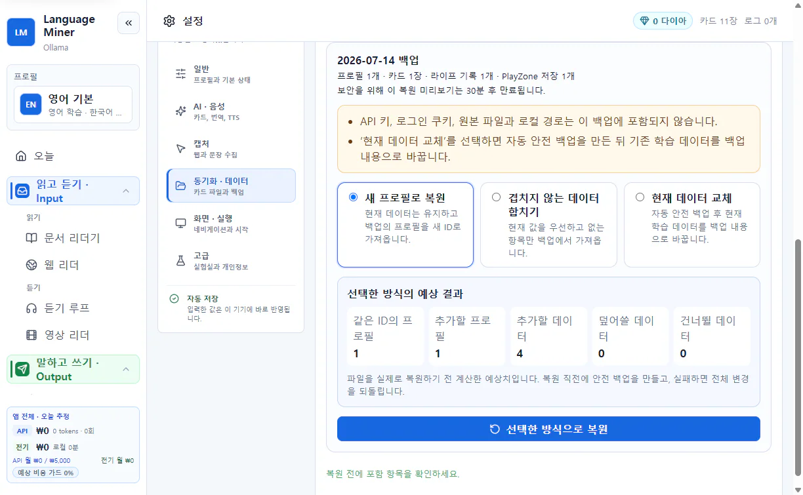
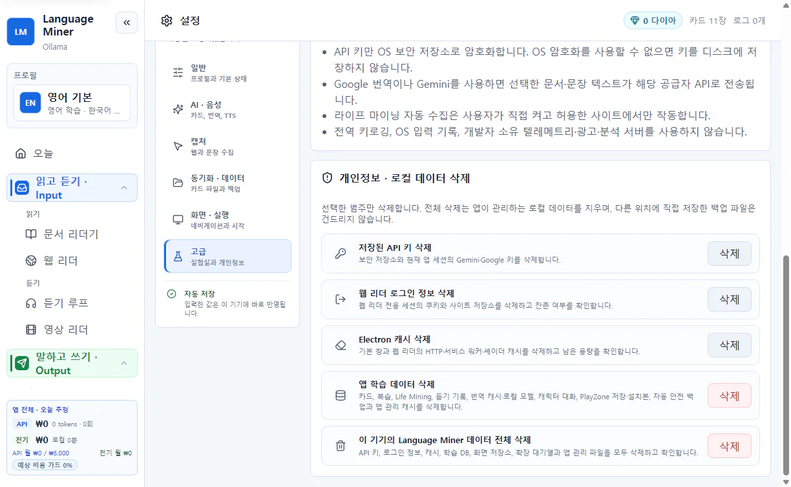
09 · 브라우저 확장 베타
첫 공개 베타의 확장은 Chrome Web Store가 아닌 선택형 수동 설치입니다. 공식 Release에서 Language-Miner-Extension-<version>.zip과 SHA256SUMS.txt를 받아 해시를 확인하고 압축을 푸세요. Chrome의 chrome://extensions에서 개발자 모드를 켜고 압축 해제된 확장 프로그램을 로드한 뒤, manifest.json이 바로 보이는 폴더를 선택합니다.
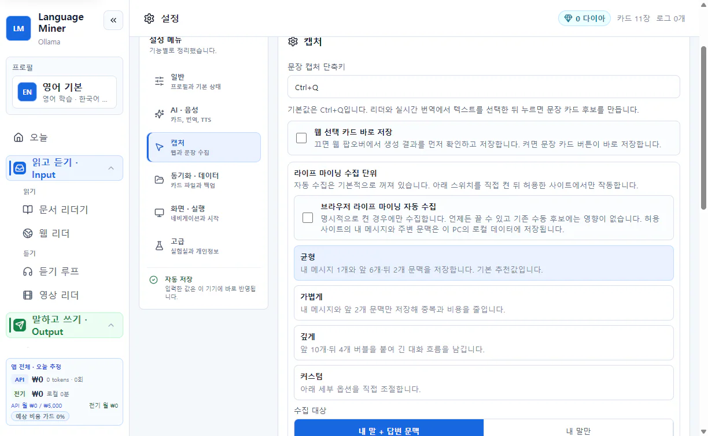
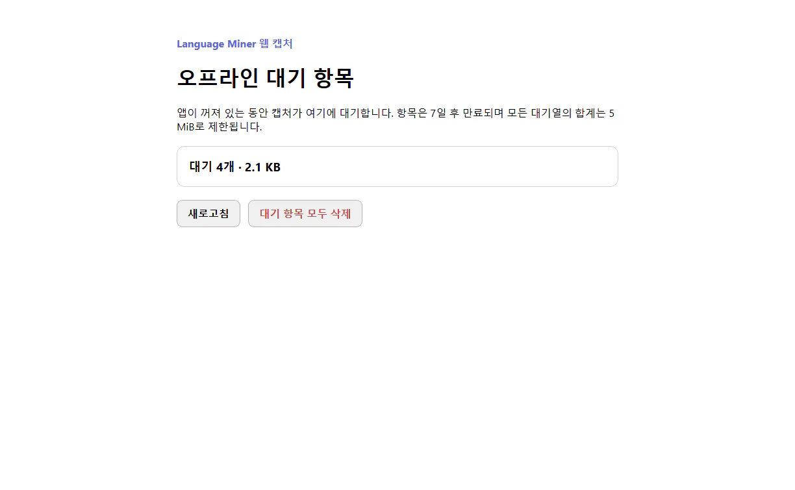
10 · 막혔을 때
{kind=link}
{kind=link}
{kind=link}
{kind=link}
{kind=link}
{kind=link}
{kind=link}
{kind=link}
{kind=link}
{kind=link}
{kind=link}
{kind=link}
{kind=link}
{kind=link}
{kind=link}
{kind=link}